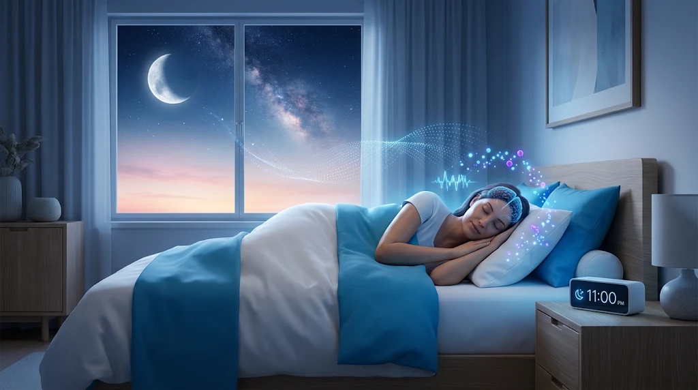

Estilo de vida y bienestar
¿Por qué es importante dormir bien?
Descubre qué le pasa a tu cuerpo y a tu mente mientras duermes, cuántas horas necesitas y cómo mejorar tu descanso.

¿Qué ocurre mientras dormimos?
Dormir no es un simple «apagado» del cuerpo. Durante el sueño, el cerebro y el organismo trabajan para mantener la salud: mientras duermes, tu cerebro se prepara para el día siguiente y tu cuerpo se encarga de procesos de reparación y equilibrio.[1]
El sueño se divide en dos fases principales, el sueño de movimientos oculares rápidos (REM) y el sueño no REM, y cada una es importante para que la mente y el cuerpo descansen por completo.[5]
Dormir lo suficiente, con buena calidad y en los horarios adecuados ayuda a proteger la salud mental y física, la calidad de vida y la seguridad.[1]
¿Por qué es tan importante dormir bien?
Para el cerebro y la salud mental
Mientras duermes, el cerebro forma nuevas conexiones que ayudan a aprender y recordar información. Una buena noche de sueño mejora el aprendizaje y la capacidad de resolver problemas, y también ayuda a prestar atención, tomar decisiones y ser creativo.[1]
Cuando se duerme poco, cuesta más controlar las emociones y la conducta. La falta de sueño se ha relacionado con depresión, ideas suicidas y conductas de riesgo.[1] Si tienes un estado de ánimo bajo de forma persistente o pensamientos de hacerte daño, busca ayuda profesional.
Para el cuerpo
El sueño de buena calidad cumple varias funciones en la salud física:[1]
- Repara el corazón y los vasos sanguíneos.
- Regula el apetito: ayuda a mantener el equilibrio de las hormonas del hambre (grelina) y de la saciedad (leptina). Cuando se duerme poco, aumenta la grelina y baja la leptina, por lo que se siente más hambre.
- Influye en cómo responde el cuerpo a la insulina: la falta de sueño provoca niveles de glucosa más altos de lo normal, lo que puede aumentar el riesgo de diabetes.
- Favorece el crecimiento y el desarrollo: durante el sueño profundo se libera la hormona del crecimiento, que también ayuda a reparar células y tejidos en niños, adolescentes y adultos.
- Fortalece las defensas: la falta de sueño prolongada puede dificultar la lucha contra las infecciones comunes.
Para el rendimiento y la seguridad
Dormir bien permite funcionar mejor durante el día. Quienes duermen poco tardan más en terminar sus tareas, reaccionan con más lentitud y cometen más errores.[1] Después de varias noches de pérdida de sueño, incluso de solo 1 o 2 horas por noche, la capacidad de funcionar se deteriora como si se hubiera pasado uno o dos días sin dormir.[1]
La somnolencia también puede causar microsueños: breves episodios de sueño que ocurren cuando se está despierto, que no se pueden controlar y de los que a veces no somos conscientes. Por eso la falta de sueño aumenta el riesgo de accidentes, sobre todo al conducir: se estima que la capacidad de conducir se ve afectada tanto como o más que por el alcohol.[1] Si sientes sueño mientras conduces, detente en un lugar seguro.
¿Qué riesgos tiene dormir poco de forma habitual?
El consenso conjunto de la Academia Americana de Medicina del Sueño (AASM) y la Sociedad de Investigación del Sueño señala que dormir menos de 7 horas por noche de forma regular se asocia con efectos adversos para la salud, entre ellos aumento de peso y obesidad, diabetes, hipertensión, enfermedad cardíaca, accidente cerebrovascular, depresión y mayor riesgo de muerte.[2]
También se asocia con un peor funcionamiento del sistema inmunitario, más dolor, menor rendimiento, más errores y mayor riesgo de accidentes.[2]
Además, estudios financiados por los Institutos Nacionales de Salud de Estados Unidos encontraron que los adultos que duermen regularmente entre 7 y 8 horas por noche tienen menor riesgo de obesidad y de presión arterial alta.[1]
¿Cuántas horas hay que dormir?
Las necesidades de sueño cambian a lo largo de la vida. Como referencia general, el Instituto Nacional del Corazón, los Pulmones y la Sangre de Estados Unidos (NHLBI) recomienda:[3]
- Niños de 1 a 2 años: de 11 a 14 horas al día (incluidas las siestas).
- Niños de 3 a 5 años: de 10 a 13 horas al día (incluidas las siestas).
- Niños de 6 a 12 años: de 9 a 12 horas al día.
- Adolescentes de 13 a 18 años: de 8 a 10 horas al día.
- Adultos de 18 años o más: de 7 a 9 horas al día.
Para los adultos, el consenso de la AASM indica dormir 7 horas o más por noche de forma regular para promover una salud óptima. Dormir más de 9 horas puede ser adecuado en adultos jóvenes, en personas que se recuperan de una deuda de sueño o en quienes tienen alguna enfermedad; para el resto, no está claro si implica algún riesgo.[2] Si te preocupa dormir demasiado poco o demasiado, consulta con un profesional de salud.[2]
Dormir mucho más los días libres puede ser una señal de que no se duerme lo suficiente durante la semana. Aunque ese sueño extra ayude a sentirse mejor, puede alterar el ritmo de sueño y vigilia del cuerpo.[3]
¿Cómo saber si no estás durmiendo lo suficiente?
La falta de sueño puede hacerte sentir muy cansado durante el día y no sentirte descansado y alerta al despertar. También puede interferir con el trabajo, los estudios, la conducción y la vida social.[1]
Es posible que no duermas lo suficiente si con frecuencia sientes que podrías quedarte dormido mientras:[1]
- Lees o ves televisión sentado.
- Estás sentado y quieto en un lugar público, como una reunión o una clase.
- Viajas una hora en auto sin parar.
- Conversas con alguien.
- Estás sentado en silencio después de almorzar.
- Esperas unos minutos en el tráfico.
También pueden aparecer problemas para aprender, concentrarse y reaccionar; dificultad para tomar decisiones, recordar cosas o manejar las emociones.[1]
En niños y adolescentes los síntomas pueden ser distintos: pueden estar muy inquietos, tener problemas de atención, portarse mal, mostrar irritabilidad, cambios de humor, tristeza o falta de motivación, y su rendimiento escolar puede resentirse.[1]
Algunas personas no se dan cuenta de que duermen poco: aunque duerman mal o poco, pueden creer que funcionan bien.[1]
Cómo mejorar tu sueño: hábitos saludables
Lo primero es darte tiempo suficiente para dormir: el sueño suele ser lo primero que se sacrifica en las agendas ocupadas. Además, el NHLBI recomienda:[4]
- Acostarte y levantarte a la misma hora todos los días. Para los niños, conviene fijar una hora de acostarse y una rutina previa.
- Mantener el mismo horario entre semana y los fines de semana, con una diferencia de no más de una hora, aproximadamente.
- Dedicar la hora previa a acostarte a actividades tranquilas. Reduce la exposición a luces brillantes y evita utilizar dispositivos electrónicos cerca de la hora de dormir, ya que pueden dificultar la conciliación del sueño.
- Evitar las comidas copiosas en las horas previas a acostarte (un refrigerio ligero está bien) y las bebidas alcohólicas antes de dormir.
- Evitar la nicotina y la cafeína (café, té, refrescos con cafeína y chocolate). Son estimulantes y pueden interferir con el sueño; los efectos de la cafeína pueden durar hasta 8 horas.
- Pasar tiempo al aire libre y mantenerte físicamente activo durante el día, cuando sea posible.
- Mantener el dormitorio tranquilo, fresco y oscuro.
- Tomar un baño caliente o usar técnicas de relajación antes de acostarte.
Siestas: una siesta breve durante el día puede mejorar la alerta y el rendimiento. En adultos, si tienes dificultades para dormir por la noche, procura que sea temprano por la tarde y que no supere los 20 minutos.[4]
Trabajo por turnos: quienes trabajan en horarios que chocan con su reloj biológico pueden aprovechar las siestas, aumentar el tiempo disponible para dormir, limitar los cambios de turno, tomar cafeína solo al inicio del turno y proteger el dormitorio de la luz y el ruido cuando duermen de día (por ejemplo, con cortinas que bloqueen la luz).[4]
¿Cuándo consultar al médico?
En una consulta de rutina los problemas de sueño pueden pasar desapercibidos porque el paciente está despierto, así que conviene mencionarlos. Habla con tu médico si con frecuencia sientes sueño durante el día, si no te despiertas descansado y alerta, o si te cuesta adaptarte al trabajo por turnos.[6]
También consulta si:[6]
- Roncas fuerte y con frecuencia, o te despiertas con sensación de ahogo o falta de aire (puede ser señal de apnea del sueño).
- Te quedas dormido o te cuesta mantenerte despierto durante tareas rutinarias, especialmente al conducir.
- Tienes problemas para dormir de forma frecuente y desde hace tiempo.
Antes de la consulta, puede ayudarte llevar un diario de sueño de algunas semanas, en el que anotes a qué hora te acuestas, a qué hora te despiertas, las siestas, cuánto duermes y cómo te sientes durante el día. Algunos trastornos del sueño se diagnostican con estudios del sueño (polisomnografía), que son pruebas indoloras. El tratamiento depende del tipo de trastorno: por ejemplo, en la apnea del sueño el objetivo es mantener abiertas las vías respiratorias durante el sueño.[6]
No te automediques con pastillas para dormir: consulta primero con un profesional de salud.
Aviso: este artículo tiene fines informativos y no sustituye la valoración de un profesional de salud. No aborda en detalle los trastornos específicos del sueño ni las necesidades de los lactantes.
Referencias científicas
- National Heart, Lung, and Blood Institute. Sleep Deprivation and Deficiency: How Sleep Affects Your Health [Internet]. Bethesda (MD): NIH; 2022 [consultado el 8 de noviembre de 2026]. Disponible en inglés. Ver documento original.
- Watson NF, Badr MS, Belenky G, et al. Recommended amount of sleep for a healthy adult: a joint consensus statement of the American Academy of Sleep Medicine and Sleep Research Society. Sleep. 2015;38(6):843-844. doi:10.5665/sleep.4716. Ver documento original.
- National Heart, Lung, and Blood Institute. Sleep Deprivation and Deficiency: How Much Sleep Is Enough [Internet]. Bethesda (MD): NIH [consultado el 8 de noviembre de 2026]. Disponible en inglés. Ver documento original.
- National Heart, Lung, and Blood Institute. Sleep Deprivation and Deficiency: Healthy Sleep Habits [Internet]. Bethesda (MD): NIH; 2022 [consultado el 8 de noviembre de 2026]. Disponible en inglés. Ver documento original.
- Eunice Kennedy Shriver National Institute of Child Health and Human Development. Sleep [Internet]. Bethesda (MD): NIH [consultado el 8 de noviembre de 2026]. Disponible en inglés. Ver documento original.
- National Heart, Lung, and Blood Institute. Sleep Deprivation and Deficiency: Diagnosis [Internet]. Bethesda (MD): NIH; 2026 [consultado el 8 de noviembre de 2026]. Disponible en inglés. Ver documento original.